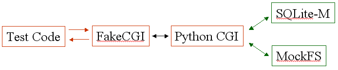
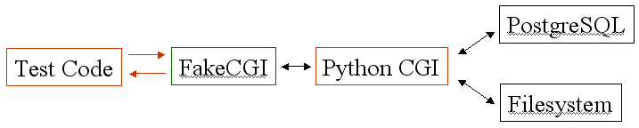

DrProject Internals: Testing
In two of the earlier postings in this series, I said that you can’t add security to a system after it has been built: instead, you have to design it in, right from the start. The same is true of testing: if you don’t think about how you’re going to test your application while you’re designing it, the odds are very good that you’ll build something that can’t (or cannot easily) be tested.
Trac was one of those. Its developers had written some unit tests, but they only covered a small part of the code in the version we started with in May 2005. Given that we were going to have high turnover in our development team (students rotating in and out on a term-by-term basis), we had to have better coverage, or we’d become mired in a downward spiral of “fixing A breaks B, fixing B breaks C, fixing C breaks A”.
But testing web applications is harder than testing classical command-line applications because web apps consist of several collaborating processes: a browser, a web server, the CGI program (or servlet container and servlets), the database server, and filesystem-dependent components like Subversion (Figure 1).

This causes three problems; in increasing order, they are:
- Unit testing libraries like JUnit (and its clones in other languages) aren't built to handle this: as the word "library" implies, they're made up of code that's meant to be called within a process. Despite the ubiquity of multi-process applications, most debuggers and testing libraries cannot track "calls" between processes.
- Configuring a test environment is a pain: you have to set up a database server and Subversion repository, clear the browser's cache, make sure the right stanzas are in your Apache configuration file, and so on.
- Running tests is slow. In order to ensure that tests are independent, you have to create an entirely new fixture for each test. This means reinitializing the database, erasing and re-creating the contents of the Subversion repository, and so on, which can take several seconds per test. That translates into an hour or more for a thousand tests, which means that developers won't run them routinely while they're coding, and might not even run them before checking changes in.
The first step in fixing this is to get rid of the browser and web server. One way to do this (shown in Figure 2) is to replace the browser with a Python script that generates HTTP requests as multi-line strings and passes them to a “fake CGI” library via a normal method call. After invoking our actual program, the fake CGI library passes the text of an HTTP response back to our script, which then checks that the right values are present (about which more in a moment). The “fake CGI” library’s job is to emulate the environment the web app under test would see if it was being invoked as a CGI by Apache: environment variables are set, standard input and output are replaced by string I/O objects, and so on, so that the web app has no (easy) way of knowing that it’s being invoked via function call, rather than being forked.

Why go through this rigmarole? Why not just have a top-level function in the web app that takes a URL, a dictionary full of header keys and values, and a string containing the POST data, and check the HTML page it generates? The answer is that structuring our tests in this way allows us to run them both in this test harness, and against a real system. By replacing the fake CGI adapter with code that sends the HTTP request through a socket connected to an actual web server, and reads that server’s response, we can check that our application still does what it’s supposed to when it’s actually deployed. The tests will run much more slowly, but that’s OK: if we’ve done our job properly, we’ll have caught most of the problems in our faked environment, where debugging is much easier to do.
Now, how to check the result of the test? We’re expecting HTML, which is just text, so why not store the HTML page we want in the test and do a string comparison? OK, it was a rhetorical question—if we do that, then every time we make any change at all to the format of an HTML page, we have to rewrite every test that produces it. Even something as simple as introducing white space, or changing the order of attributes within a tag, will break string comparison.
A better strategy is to add unique IDs to significant elements in the HTML page, and only check the contents of those elements. For example, if we’re testing login, then somewhere on the page there ought to be an element like this:
<div id="currentuser">Logged in as <strong>gvwilson</strong> (logout | preferences)</div>
We can find that pretty easily with an XPath query, or by crawling the DOM tree produced by parsing the HTML ourselves [1]. We can then move the div around without breaking any of our tests; if we were a little more polite about formatting its internals (i.e., if we used something symbolic to highlight the user name, and trusted CSS to do the formatting), we’d be in even better shape.
We’ve still only addressed half of our overall problem, though: our web application is still talking to a database, and to Subversion, and reinitializing those each time we run a text is still sloooooooow. We solve this by moving the database into memory, and replacing Subversion with a mock object (Figure 3).
Let’s start with the database. Most applications rely on an external database server, which is just a long-lived process that manages data on disk. An increasingly-popular alternative is the embedded database, in which the database manipulation code runs inside the user’s application as a normal library. Berkeley DB (now owned by Oracle) and SQLite (still open source) are probably the best known of these; their advocates claim they are simpler to build and faster to run, although there are lots of advantages to the server model as well.
From a testing point of view, the great advantage of embedded databases is that they can be told to store data in memory, rather than on disk. This would be a silly thing to do in a production environment (after all, the whole point of a database is that it persists), but in a testing environment, it can speed things up by a factor of a thousand or more, since the hard drive never has to come into play. The cost of doing this is that you have to either commit to using one database in both environments, or avoid using the “improvements” that different databases have added to SQL.
We initially thought we could do the first—SQLite seemed like it would be fast enough for us even in a production environment, and it was easy to set it up to run in memory. However, we tripped over a concurrency bug in the Python/SQLite bindings in July 2005; lacking the skills or time required to fix it, we decided we’d use PostgreSQL for production, and SQLite for testing. As part of a big refactoring effort in January 2006, Chris Lenz introduced a sort-of kind-of object/relational mapping layer that hid most of the differences between the two. I’d like to go back one day and revisit this, but what we have is good enough for now.
What about Subversion? There’s only one of it, and it doesn’t support in-memory operation, so it would seem that we’d have to create a repository and check in a bunch of files every time we wanted to run a single unit test. What saved us was the fact that DrProject only uses a small fraction of Subversion’s capabilities: our unit tests don’t have to be able to exercise commit, branch, properties, or anything else that actually changes the repository.
Our approach was therefore to create a mock object that implemented just the subset of Subversion’s API that we cared about. Its “repository” consists of a dictionary of lists of lists (which should have been a dictionary of objects, but hey, nobody’s ferpect); its interface knows how to pull out the contents of files and directories by revision number, the items affected by a change set, and the “check-in” comments. Typing in one of these repositories takes 10 or 15 minutes, but we only need three or four to test everything we care about.
With all of these changes, DrProject zips through its tests quickly enough that developers actually will run the test suite before checking in changes to the code. The downside is the loss of fidelity: the system we’re testing is a close cousin to what we’re deploying, but not exactly the same. However, this is a good economic tradeoff: we may miss a few bugs because we’re not using a real Subversion repository, or because our fake CGI layer doesn’t translate HTTP requests exactly the same way Apache and Python’s libraries do, but we catch (and prevent) a lot more by making testing cheap.
And now for the bad news. We haven’t implemented all of this yet—in particular, the fake CGI layer was never completed, and the mock Subversion repository has fallen behind the rest of the code. This is mostly my fault: over the past sixteen months, I’ve been too distracted by other things to check the source on a regular basis. Partly, though, it’s a reflection of the fact that most developers (even ones I’ve had a chance to brainwash) don’t take testing as seriously as they should. Getting DrProject to the point where one command will run tests that exercise 90% or more of its capabilities is my #1 priority for the summer of 2007.
[1] Assuming we’re generating well-formed HTML, which of course we should be.See also:
- Steve Freeman, Nat Pryce, Tim Mackinnon, and Joe Walnes: Mock Roles, Not Objects.
- The HttpUnit site.
- Gerard Meszaros: XUnit Testing Patterns.
- Gary Pollice: Using mock objects for complex unit tests.
Later: Titus Brown posted a short note on bypassing the server when testing apps running on WSGI. I’d really like to try this out…